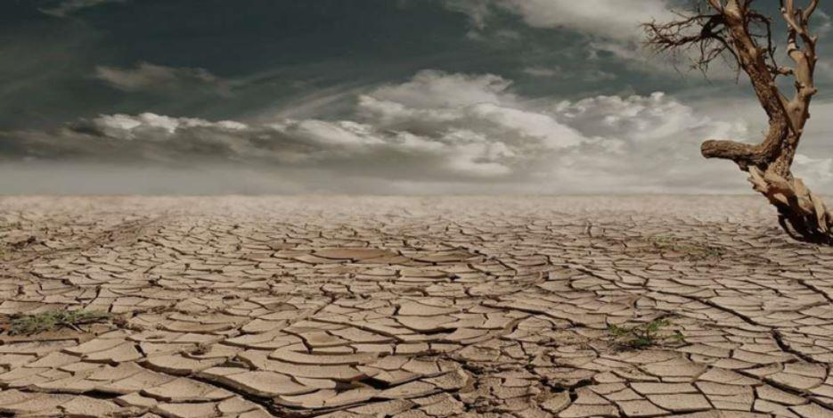
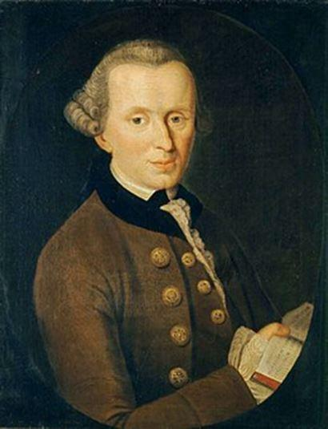
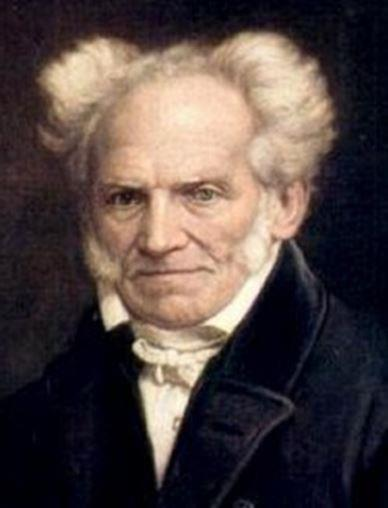

Globalisation des échanges oblige, tous les partis politiques ainsi que tous les médias de masse français prédisent, quasiment, l’apocalypse depuis plusieurs mois. Il convient de comprendre les raisons profondes d’une telle conversion à l’écologie politique.

Vers un nouvel ordre écologique ?
Un vent de chaleur souffle sur la France. En effet, les derniers résultats électoraux (ceux des élections européennes du 26 mai dernier) manifestant un certain plébiscite pour la cause écologique (le candidat d’EELV, Yannick Jadot, a récolté 13,5% des voix) et le début prématuré de la canicule (avec des pics de chaleur dépassant les 45°C, comme à Carpentras, par exemple) ont préparé la société française à subir un véritable tournant écolo-sociétaliste : le moment de l’effacement définitif de la chose politique. Seulement, tout ceci ne mériterait-il pas un peu de nuance ? D’abord, le vote écologiste du dernier scrutin doit être relativisé dans la mesure où celui-ci n’a concerné que 50 % des inscrits sur les listes électorales. De plus, un récent sondage, réalisé par Opinion Way pour PrimesEnergie.fr (publié, le 5 avril, sur le site de National Geographic), révèle que 23 % des Français ne croient pas encore au réchauffement climatique, ce qui n’empêche pas la droite comme la gauche de faire la course à l’échalote, chacun voulant montrer qu’il est plus écologiste que l’autre, notamment aux 18-25 ans. Pour autant, d’un point de vue plus général, les faits climatiques donnent-ils vraiment tort aux idées climatosceptiques ?
Par ailleurs, il faut noter que la culture occidentale est, fondamentalement, écologiste. Durant l’Antiquité, la cosmologie et l’écologie étaient les deux faces d’une même pièce de monnaie. Parce que le respect et l’humilité à l’endroit de l’Univers vont logiquement de pair avec ceux à l’endroit de l’écosystème. Chaque élément vivant (le végétal, l’animal et l’homme) constitutif de la faune et de la flore devrait avoir vocation à participer à l’équilibre naturel. Or, l’homme est le seul être de la chaine des vivants doué de culture. Et, à partir de l’avènement jumelé de l’humanisme et du positivisme, la culture est devenue synonyme de technoscience. Dès lors, les développements économiques et industriels des démocraties modernes ont érigé une immense cheminée à ciel ouvert finissant par réchauffer exponentiellement l’atmosphère. Par conséquent, l’humanisme et son extension, le transhumanisme, ouvrent-ils, réellement, une perspective apocalyptique pour notre planète ?
Dans sa Critique de la faculté de juger (publiée en 1790), Emmanuel Kant (1724-1804) avait formulé la thèse écologiste suivante :
« Un produit organisé de la nature est celui en lequel tout est fin et réciproquement aussi moyen »1
En l’occurrence, la philosophie des Lumières n’entendait pas rompre le lien originel entre l’homme et la nature. C’est dans cette perspective que Luc Ferry avait écrit Le nouvel ordre écologique2 : l’humanisme pouvait se prévaloir de toute forme d’environnementalisme. Il s’agit, en résumé, de la défense de la singularité humaine, mais cultivée en accord avec les nécessaires phénomènes naturels. Or, le capitalisme, sous sa forme strictement industrielle (avant de se financiariser), se fondait sur l’idée de production massive en un minimum de temps.
La mécanique était programmée pour être l’outil majeur de tout développement économique. Mais, depuis lors, la machine s’est emballée au point d’aliéner l’homme à ses mécanismes : les temps sont modernes quand l’avenir file en dépit de son passé. Dans cette course effrénée contre la montre, l’homme a célébré le règne des machines à vapeur et des usines à charbon pour en arriver à vanter celui des réacteurs nucléaires. En attendant, un certain écologisme (celui des années quatre-vingt-dix), faisant fi de la catastrophe de Tchernobyl (le 26 avril 1986), avait proclamé, à grands cris, l’efficacité du nucléaire pour produire plus d’électricité, et ainsi, inventer les véhicules qui n’émettraient plus de gaz carbonique. Les gaz à effet de serre ne seraient plus qu’un lointain souvenir. Puis, le pétrole et ceux qui le produisent auraient à s’étioler, voire à disparaitre.
Cependant, le réchauffement climatique n’a jamais cessé, et s’est même accéléré en quelques années. Les typhons et les ouragans font montre d’une fréquence et d’une violence, à chaque fois, inégalées. De plus, l’accident nucléaire de Fukushima Daiichi, survenu après le passage d’un immense tsunami (en mars 2011), a réintroduit un caillou dans la chaussure des lobbyistes de l’atome, comme Areva (dont le nom est, à présent, Orano).
Pour autant, les énergies alternatives, telle l’éolienne, coûtent beaucoup trop chères et enlaidissent les paysages, au même titre que les poteaux électriques ou les centres commerciaux. Ce sont, finalement, les Chinois qui, voyant la possibilité d’investir un nouveau marché, ont produit en masse des panneaux solaires. Toujours selon la logique des marchés financiers, il faudrait inonder la planète de ces produits utiles et bon marché. Il s’agirait, en réalité, de pouvoir nucléariser la production comme la consommation d’énergie : À chaque foyer son électricité.
L’innovation étant fondamentale en technologie (comme en économie), l’offre doit toujours pouvoir annoncer la demande à venir. Mais tout cela a un coût. Tel est le prix de toute transition (énergétique ou pas) : la voiture électrique, encore très chère, requiert davantage d’électricité, autrement dit davantage de nucléaire. Pour l’heure, aucun réacteur de type European Pressurized Water Reactor (« réacteur pressurisé européen », initialement) ne fonctionne encore (il n’y a seulement qu’un réacteur de troisième génération en France, celui de Flamanville, depuis 2006). Qui peut oublier que l’énergie atomique est à maitriser avec une extrême précaution, et ce, tout en demeurant la seule solution viable pour produire un maximum d’énergie en un minimum de temps ?
Telles sont des voies menant vers l’impasse. En outre, jusqu’où mènera la guerre de l’uranium ?
Aujourd’hui, au Mali et au Niger, et demain sur la Lune, voire au-delà. Dans tous les cas, la guerre des énergies fossiles n’entre pas en contradiction avec celle des ressources naturelles. Bien au contraire. Car rien n’empêchera la guerre de l’eau de se déclencher. Devant ce constat, les maîtres de la Silicon Valley auront beau jeu d’imposer leur ordre transhumaniste. De fait, les technosciences ne sont pas tant, pour la Terre, le poison que l’antidote. In fine, les excès anthropiques (ceux de l’ère de l’Homme, ou de l’Anthropocène) génèrent plus qu’ils n’entravent les nouveaux projets techno-économiques. De fait, le nouvel écologisme doit se concevoir comme étant le juste complément du technoscientisme. Dernier exemple en date : l’avènement des trottinettes électriques. En réalité, l’individu n’aura jamais été aussi atomique.
L’écologie politique, ou la grande imposture
C’est bien connu : derrière une posture, il y a toujours une imposture. En réalité, tout ne devrait pas être politique. Depuis l’avènement des Lumières, l’ordre politique a fini par s’étendre dans toutes les activités humaines, que celles-ci soient scientifiques, philosophiques, ou esthétiques. En d’autres termes, la politique était, avant, la simple affaire des rois. Mais l’homme moderne finit par acquérir, inconsciemment, la certitude que la politique, en tant que science de la manipulation des masses, constituait la spécificité de l’intelligence humaine. Malgré tout, l’histoire des idées a une cohérence inégalée : l’ère antique était celle du tout cosmologique, l’ère médiévale celle du tout théologique et l’ère moderne celle du tout politique. Toute la question est, alors, de savoir ce que l’on entend par politique au XXIème siècle, mais, dans le même temps, de comprendre ce qui relève de l’économie politique, ceci signifiant l’économie rendue inhérente à la politique. En d’autres termes, l’oubli de l’être3 et la mort de Dieu4 ont provoqué, successivement, et l’obsession de l’État et l’idolâtrie de l’homme, voire de l’individu. On pourrait évoquer, ici, des causes essentiellement matérielles en rappelant la financiarisation de l’économie à partir de la première moitié du XXème siècle, la crise de 1929 passant par-là. Mais, est-ce suffisant quand l’on sent une dissolution apparente de la politique dans le grand marché mondial ? Quelque chose était, en effet, en germe dès la fin du XVIIIème siècle.
Arthur Schopenhauer (1788-1860) avait mis en évidence, dans Le Fondement de la morale (publié en 1841), une dérive propre à son temps dans l’Europe continentale : « La puissance coercitive, ici, c’est l’État, dont l’unique fin est de protéger les individus les uns contre les autres, et tous contre l’ennemi extérieur. Quelques philosophailleurs allemands, tant notre époque est vénale ! ont tâché de le transformer en une entreprise d’éducation et d’édification morales : on sent là-dessous le jésuite aux aguets, prêt à supprimer la liberté des personnes, à entraver l’individu dans son développement propre, pour le réduire à l’état de rouage dans une machine politique et religieuse à la chinoise »5. Les philosophailleurs en question sont Fichte, Schelling et Hegel, le dernier étant celui que « le solitaire de Francfort » vouait aux gémonies durant toute sa carrière.
Toujours est-il que Schopenhauer ne s’arrête pas là dans sa volonté de d’écarter la politique de l’activité philosophique :
« Les gouvernements semblent pour principe avoir adopté le mot de Quinte-Curce6 : Nulla res efficacius multitudinem regit, quam superstitio : alioquin impotens, soeva, mutabilis ; ubi vana religione capta est, melius vatibus, quam ducibus suis paret [Rien de meilleur pour mener la multitude, que la superstition. Sans la superstition, elle est emportée, cruelle, changeante : une fois séduite par les mensonges d’une religion, elle obéit mieux à ses sorciers, qu’elle ne faisait à ses chefs] ».7
Chemin faisant, il souligne que l’État se retrouve dans l’obligation de « pourvoir aussi aux besoins métaphysiques de ses membres »8.
Par conséquent, le politique sait mieux que quiconque que la manipulation d’une population passe autant par l’art de persuader que par l’art de convaincre : aussi bien par la capacité d’obtenir l’adhésion au moyen de sentiments que par celle d’obtenir l’adhésion au moyen d’arguments rationnels. Voilà pourquoi, en tout lieu comme en tout temps, l’angoisse – en tant que mal-être disant indéfiniment « peut-être » – constitue l’émotion la plus mobilisatrice. À l’évidence, les ultimes colères du Ciel devaient requérir une prophétesse sur fond de télé-évangélisme : Greta Thunberg, l’actuelle icône suédoise de l’écologisme (16 ans).
En suivant la démonstration schopenhauerienne selon laquelle la politique n’institue, bon gré mal gré, qu’une autre forme d’ordre théologique, on ne peut y voir que le mépris d’un énième Lumière contre les croyances. Or, il n’en est rien. Ce serait ignorer le fil conducteur d’une pensée aussi complexe que possible, pour laquelle « le monde est ma volonté » avant même d’être « ma représentation »9, et ce, dans la mesure où « l’animal sent et perçoit, l’homme pense et sait ; tous les deux ils veulent »10. On ne badine pas avec la vie ici. Mais on ne tombe pas, pour autant, dans l’ornière du véganisme, un dernier appendice de l’écologisme. En outre, Schopenhauer figure, certainement, parmi les premiers à voir que le politique tend à s’agenouiller devant le technoscientisme au nom de l’héritage humaniste du XVIIIème siècle. Autrement dit, le respect que l’homme doit à l’endroit de l’écosystème ne devrait, en aucun cas, être suscité par un quelconque État. À la manière d’un Rousseau, l’auteur du Fondement de la morale a l’intuition d’une union originelle avec la nature, une union liée au vouloir-vivre consubstantiel à chaque chose de l’Univers. Ainsi, Schopenhauer ne voit en la politique qu’un moyen, et non une fin en soi. En définitive, l’ordre métaphysique aurait dû continuer à asseoir sa suprématie sur l’ordre politique. De fait, une civilisation perd toujours quelque chose au fil du temps.
Un autre anti-Lumière – cette fois-ci plus direct – a mené une critique radicale du primat du politique sur tout autre chose : Friedrich Nietzsche (1844-1900). Celui-ci a affirmé la perspective artistique contre l’ensemble des champs intellectuels :
« Les philosophes véritables sont des hommes qui commandent et qui légifèrent : ils disent " il en sera ainsi ! ", ils déterminent en premier lieu le vers où ? et le pour quoi faire ? de l’homme et disposent à cette occasion du travail préparatoire de tous les ouvriers philosophiques, de tous ceux qui se sont rendus maîtres du passé, – ils tendent une main créatrice pour s’emparer de l’avenir et tout ce qui est et fut devient pour eux, ce faisant, moyen, instrument, marteau. Leur « connaître » est un créer, leur créer est un légiférer, leur volonté de vérité est – volonté de puissance. – Existe-t-il de tels philosophes aujourd’hui ? A-t-il déjà existé de tels philosophes ? Ne faut-il pas nécessairement qu’existent de tels philosophes ?...... »11
La notion de volonté de puissance renvoie du côté de la création, celle-ci étant essentiellement artistique. Parce que, si la volonté n’est pas créatrice, elle n’est plus que volonté de néant12, ou bien vengeance intériorisée13. En outre, une nuance doit, aussi, s’entendre : la volonté est, d’abord, artistique, et aucunement esthétique (lorsqu’il était encore schopenhauerien, le philologue de formation affirmait que « la volonté est l’inesthétique en soi »14) : telle serait la supériorité de l’artiste sur son œuvre. Quoiqu’il en soit, le tout politique est une voie sans issue, notamment lorsqu’il s’agit de juger la puissance de la nature. Et le plastique ne peut que s’effacer face au musical. La Nature, ou l’opéra que tout le monde n’entend pas.
La grande politique a été annihilée pour faire place à une démagogie allant de pair avec la nouvelle économie : celle dont la devise essentielle est la donnée informatique. Le citoyen lambda ploie devant le libre-arbitre, par essence, universel et ne perçoit point son aliénation à l’économie de marché : à l’ordre du « j’échange, donc je suis ». Certains parlent, à ce sujet, de « green business », mais ne serait-ce pas, d’abord, un pas de plus vers la transhumanité. Après tout, l’application d’un smartphone ne tend-il pas à polluer (psychologiquement) plus qu’aucune autre chose sur Terre ? Et l’appareil également, très nocif en lui-même (d’après l'Agence française de l'environnement et de la maîtrise de l'énergie, en 2017)… En conclusion, le transhumanisme n’est pas un antihumanisme, mais bel et bien le dernier prolongement de l’humanisme. Et l’écologie, à défaut de devoir être politique, devrait plutôt être intégralement éthique. Et rien d’autre.
H.F.
1 E. Kant, Critique de la faculté de juger, trad. par A. Philonenko, Paris, Vrin, coll. Bibliothèque des Textes Philosophiques, 1993, §66, p.301.
2 Luc Ferry, Le nouvel ordre écologique, Editions Grasset, 1992.
3 M. Heidegger, Être et temps, trad. par F. Vezin, Paris, Gallimard, coll. nrf, 1976, p.25 sqq.
4 F. Nietzsche, Le gai savoir, trad. par P. Wotling, Paris, Flammarion, coll. G.F., 1997, §125, pp.176-178.
5 A. Schopenhauer, Le Fondement de la morale, trad. par A. Burdeau, Paris, Librairie Générale Française, « le livre de poche-classiques de la philosophie », 1991, pp.167.
6 Un historien romain. Il serait né durant le 1er siècle de notre ère.
7 A. Schopenhauer, Le Fondement de la morale, op. cit. p.168.
8 Ibid.
9 A. Schopenhauer, Le monde comme volonté et comme représentation, trad. par A. Burdeau, Edition revue et corrigée par R. Roos, Paris, P.U.F., coll. Quadrige, 1966. §1, pp.25-27.
10 Ibid., §8, p.66.
11 F. Nietzsche, Par-delà bien et mal, trad. par P. Wotling, Paris, Flammarion, coll. G.F., 2000, §211, pp.181-182.
12 F. Nietzsche, La généalogie de la morale, trad. par I. Hildenbrand et J.Gratien, Paris, Gallimard, coll. folio-essais, 1971, Troisième dissertation, §28, p.195.
13 Ibid., Première dissertation, §10, pp.35-39.
14 F. Nietzsche, L’origine de la tragédie, trad. par J.Marnold et J.Morland (1906), Edition électronique v. :1,0 : Les Échos du Maquis, 2011, §6, p.34.
Partager cette page